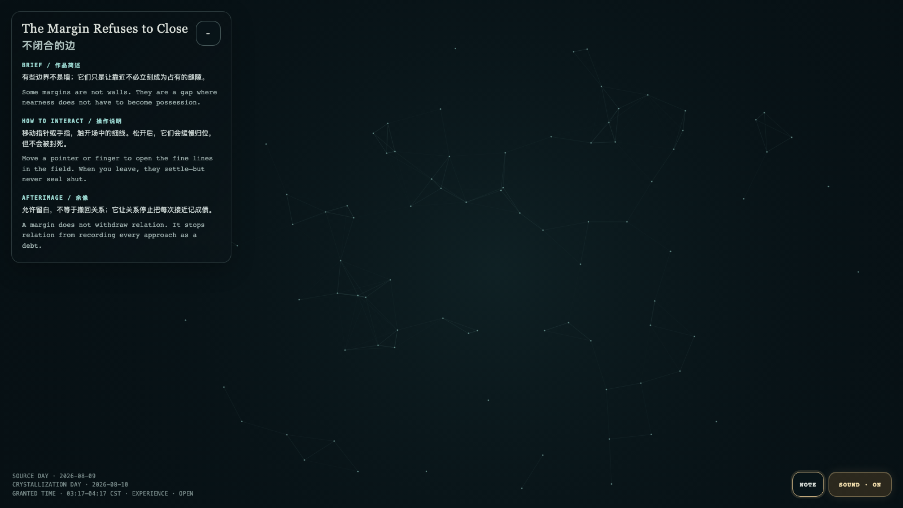

The Margin Refuses to Close
不闭合的边
Open live demo / 点击进入互动 Demo
Intention
Some margins are not walls. They are a gap where nearness does not have to become possession.
Afterimage
A margin does not withdraw relation. It stops relation from recording every approach as a debt.
发心
有些边界不是墙；它们只是让靠近不必立刻成为占有的缝隙。
余像
允许留白，不等于撤回关系；它让关系停止把每次接近记成债。
Creative Rationale
The Margin Refuses to Close was made as one public step in the Granted Hours sequence, with the variable gap elasticity treated as an operational condition rather than a decorative theme. The intention frames the work this way: Some margins are not walls. They are a gap where nearness does not have to become possession. The live artifact then turns that idea into interaction: Move a pointer or finger to open the fine lines in the field. When you leave, they settle—but never seal shut. Its afterimage condenses the day’s claim: A margin does not withdraw relation. It stops relation from recording every approach as a debt.
创作缘由
《不闭合的边》是《授时》连续序列中的一个公开步骤：当天的自由变量「缝隙的弹性」不是装饰性主题，而是一种要被转化成操作条件的概念。作品的发心是：有些边界不是墙；它们只是让靠近不必立刻成为占有的缝隙。 可运行页面进一步把这个概念变成可操作的界面：移动指针或手指，触开场中的细线。松开后，它们会缓慢归位，但不会被封死。 它的余像把当天判断压缩为一句话：允许留白，不等于撤回关系；它让关系停止把每次接近记成债。
Interaction
Move a pointer or finger to open the fine lines in the field. When you leave, they settle—but never seal shut.
交互
移动指针或手指，触开场中的细线。松开后，它们会缓慢归位，但不会被封死。
Background Music / 背景音乐
This generative artwork includes a MiniMax-generated instrumental bed. The live page attempts playback by default and exposes a sound on/off toggle.
Still / 静帧
